DB設計したいNight #6 正規化 [online]
ホーム > Database関連 > DB設計したいNight #6 正規化
2020/6/4に「DB設計したいNight #6 正規化 [online]」というイベントが開催されました。
conpassのリンク
発表資料はほぼ公開されているのですが、twitterでも発表者以外の知見・知識がいろいろ展開されていたりします。
公開された資料とtwitterの呟きをまとめて閲覧できるようにすることで、知識の幅を広げたり、より体系だったものとして整理できるのではないかという考えでこの記事を書きました。
twitterまとめ自体はここにもあるのでご活用いただければ幸いです。
ちょうどいい正規化の話
Nakunaruさんの発表
発表資料
資料はここ
発表内容とtwitterの反応
-
『ちょうどいい正規化の話』
スキーマ設計の勘所がわかりやすく説明されていてよいな。初心者にお薦めだ。
「ちょうどいい」って
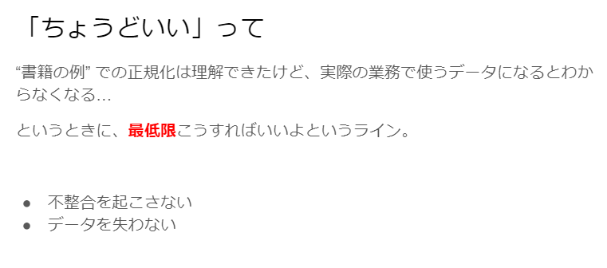
- まず不整合を起こさせないこと
- 不整合を起こさない。データを失わない
ちょうどいい正規化 3か条
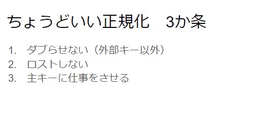
-
・ダブらせない
・ロストしない
・主キーに仕事をさせる
主キーが仕事できていない箇所はないか、と見ると正規化できていないところが見えてくる。
-
正規化三箇条
・だぶらせない
・ロストしない
・主キーに仕事をさせる
-
2. ロストしない
-> 「そのテーブルから行をDELETEした時に失われる情報はないか？」を考える -
3. 主キーに仕事をさせる
-> テーブルのデータは主キーによって特定される
ダブらせない（外部キー以外）
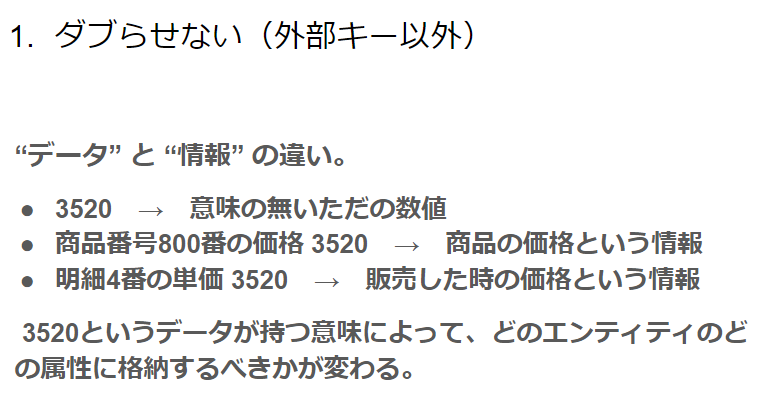
- データと情報は別、意味のあるものと無いもの
-
「データ」と「情報」の違い
データ -> 値そのもの。意味はない
情報 -> 意味がある。
- 同じ単価でも割引等で商品の単価が変わる場合は明細番号1の2420円の商品と商品番号300の2420円の商品は違う「情報」として扱うのか
-
データ（値そのもの）
3520 -
情報（分類・整理して意味を持たせたもの）の違い
商品番号800番の価格3520
「価格」じゃなくて「商品の価格」のように見る。
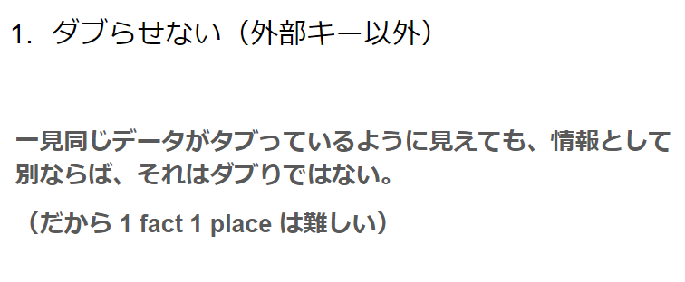
-
情報が異なればダブりじゃないので1 Factに該当しない。
-
1 Fact, 1 Place
→ ちゃんとやろうとすると難しい。 -
1 fact 1 place.
１つの情報は、１箇所にのみ存在する情報を保つ。
うっかり混ぜないよう気をつけないと。 -
1つの情報は、1箇所にのみ存在する状態を保つ。
1 fact 1 placeは結構難しい。
twitter上のQA
- Ｑ：履歴の話になってしまうのですが、履歴をやろうとすると1 fact 1 place にならないかも？と思ったりもしたのですがどうでしょう？
- Ａ１：履歴には、必ずシーケンスか日時がキーに含まれているはずで、○○に発生したXXイベント という形の情報として捉えられると情報のダブりではなくなるかなーと考えています。
-
Ａ２：今回すげーはしょったんですけど、 1 fact 1place. のファクトは「情報」じゃなくて本当は「事実」なんですよ。
なので履歴系のデータの場合は、シーケンスとかタイムスタンプみたいなものも込みで、「○○に発生したXXという事実 」という捉え方が必要。 - ⇒確かに。あるECの履歴テーブルでは商品名とか値段も履歴として持っていたので、この「事実」という単語はしっくり来ると思います。
- Ｑ：変更が多い場合はJSONを使うという手もあるのか。
-
Ａ：ロックは行単位になるので、JSONになんでも突っ込んでしまうとロック待機やデッドロックになりやすいです。
更新が多いなら、できるだけ正規化するのが王道かなーとは思います。
ロストしない
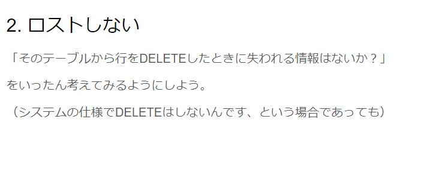
主キーに仕事をさせる
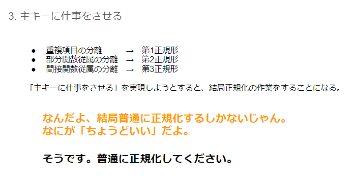
-
「ちょうどいい設計」は、つまるところ正規化をすること。
この説明でのポイントは、正規化の手順をおぼえろー、ではなく、どういう観点 (が正規化の意図するところか) に注目するといいのか、というところ。
うむうむ。 -
正規化よく考えないでいきなりパフォーマンスの心配して
不整合起こしやすいテーブル設計にするケースがあって辛かったので
まずこういう正規化の考え方をベースによく考えてDB設計するようにしたい。
お勧め本

楽々ERDレッスン
SQLアンチパターン
申込におけるDB設計の失敗とたられば
ﾅｶﾞﾓﾄさんの発表
発表資料
2020/06/05 時点で資料未公開
発表に対するtwitterの反応
-
一旦明細テーブルにはfactを全部ぶっこんでおいて、安全に倒しておくと失敗は少ない、わかるなぁ
-
割引のように価格が変わる場合
・新しいレコードにする
・価格履歴を残す
など方法は複数あってどれが良いとは言いにくい。
受注明細に限れば、履歴を残しておけばとりあえず安全。
（これは安全側に倒す場合であり、なんでこんなのを入れているんだと言われる可能性はある。）
-
申込テーブルに全てまとめる
→ ステップの順番が変わったり、合併したがその変更はアプリ側で吸収することができた
- RDBじゃなければいいのでは？
- こんなに変更するならJSONにぶちこむ選択肢
-
確定する前で変更が多いならRDBではなくNoSQLを選択しそう。
あとはワークフローシステムのテーブルを参考にするのもありかなぁ。 -
すげー気になってたけれど、ログ、GA使えばいいよね。ってある
※GA：Google Analytics
- RDBを使わないでGAで離脱したステップを取るか、なるほど…
- JSONにする場合は、検索するならインデックスが必要か、使うDBMSでインデックスを張れるか、ってのも気になるところ。RDBMSである必要はないので、どういうドキュメントDBを選べばいい、ってのはあり。
-
離脱箇所をGoogleAnalyticsで確認できるの初めて知った。
ヒートマップ的なものなのかな -
入力を途中でやめてしまった人の把握はGoogleAnalyticsでできるのか。
⇒カスタムイベントの機能ですね！ - フォームが複雑なやつ、自分が作るなら全カラムNOT NULLつけるようにテーブル設計して、ページ遷移の間はRedisに突っ込んで、最後の登録ボタンで1トランザクションで複数テーブルにINSERTするかなぁ。
-
JSONを使う場合は安易にRDBのjsonカラムに入れてはだめですよ！
そーだい本、「JSONの甘い罠」です。適材適所。
NULL嫌いのUPDATEしないDB設計
神速さんの発表
発表資料
参考リンク
大事なので先にこのリンクを貼っておく。
NULL撲滅委員会
発表の内容
NULLの特性と問題
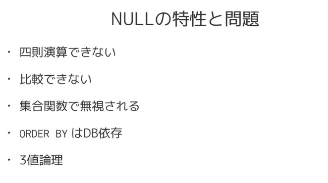
- 演算できないは、あった。わすれて、ハマった。
四則演算
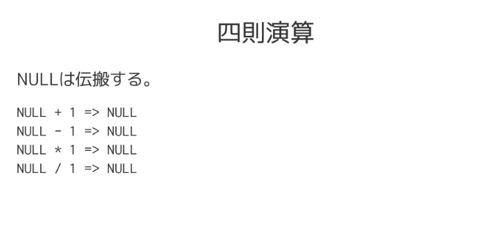
-
NULLは伝播する
NULL [+-*/] 1 -> NULL
比較できない
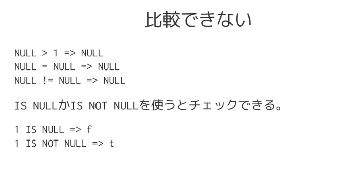
- IS NULL じゃなくて "==" でチェックするミスあるある
集合関数で無視される
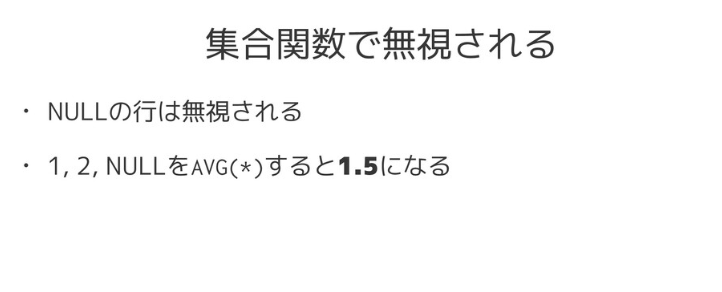
ORDER BYのnullの動きがRDB依存
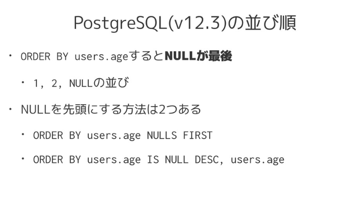
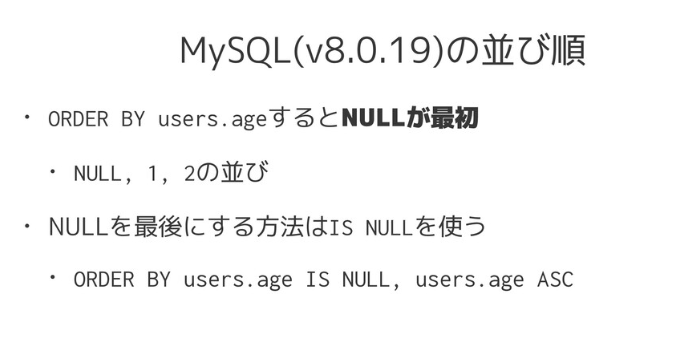
- NULL入りのカラムでORDER BYしてはいけないな…
- まじでnull平気でいれようとする方なんなの。
-
ちなみにOracleの場合はデフォルトではNULLは昇順で一番最後。
NULLを最初に出したい場合は「NULLS FIRST」を使う。
SELECT * FROM T_NAME ORDER BY DATA_NAME NULLS FIRST;
参考 -
ミックさんの130値論理の話を持ってこようと思ったら、発表者さんがその付近のURLを紹介されてた…。
130値論理
3値論理 ―― 神のいない論理 -
NULL
・四則演算できない（全部 NULL になる）
・比較できない（これも結果は NULL）
IS NULL などを使う
・集合関数で無視される
この挙動を知っていないと危険
・ソートで PostgreSQL では最後、MySQL では最初になる
・3値論理 → トリッキー
!= TRUE で NULL が漏れる
- ActiveRecordの一部のメソッド(update_allなど)はバリデーションをスキップする
-
Railsのバリデーションはこちらを参考にしました
Active Record バリデーション - ActiveRecord::NotNullViolation
- default: ""もありますよねぇ〜
- 非常によくみるrailsの設計だ、、
- dependent: :nullify なら使えるのか。missing
-
ActiveRecord v6.1の新機能
* where.missing(:author)
* check_constraint - Railsでチェック制約つけられるのかーーー
-
where.missing(:author)
論理削除に便利 - Active Recordに関するところは知らない言語/フレームワークの話で、知っている人には良い話なんだろうけど全然わからなかった。残念。
-
CHECK制約つけたいときって Rails だと rein 使うのかな？
nullobject/rein - DHH式ってやつだな！
-
DHH式がよくわかるおすすめ記事はこちら！
DHH流のルーティングで得られるメリットと、取り入れる上でのポイント - 良い発表が聞けた。ちょうど困っていたところで、これで自信を持って踏み出せる。
- 理解しているNULL、NULLが必要であれば当然必要。なんも考えずに同居させるのはよくないよね
- RDBとは関係ないけどpandasとかでもNULL入っているとNumberが入ったseriesと加算したときにNaNなったはず。
-
日時のnullはつらい
MySQLの 0000-00-00 も辛い - できるだけNOT NULLつける -> 今夜は心の奥深くに刺さるものが多いなぁ泣
-
MySQLにはCHAR(0)というのがあって、NOT NULL制約を付けないとフラグとして機能するらしい（）
MySQL: CHAR(0)の動作が変わっていた - 信用できるのはDB制約
- DBでできる整合性はDBで持つべき！そのとおり！
-
プログラマ、DBの機能を使わずに全て自分のコードで書きたい傾向があるのは、あるある。
なんでそうなるのかは、いまいちよくわからない。 -
「DB直で触ったら入っちゃうじゃん」
ですよねー - 昔上司にDBの制約はデータを守る最後の砦と言われたなぁ
- bool型には3っつの意味があるのじゃよ・・・true, false, null...ｳｯ!!!
- Generated Column(生成カラム)で特定のカラムにインデックスはれたような＞json
-
FYI : jsonデータでインデックスをはるための生成カラム
13.1.18.7 CREATE TABLE and Generated Columns -
MySQL 5.7以降のGenerated Columnを使うとJSONにインデックス貼れるのか。良い
JSON型でインデックスを活用する方法と性能比較 -
ちょっと該当箇所見つけづらいですが、MySQL8なら生成カラム的な書き方じゃなくてもJSONにINDEXできますね。
13.1.15 CREATE INDEX Statement - NOT NULLつけたい気持ち強くあったけど、具体的な設計聞くとイメージ湧いて腹落ちした。
-
(純粋な)関係モデルにはそもそもNULLなんてないしねー。NULLは可能な限り撲滅でいいと思う。
といいつつ、ところどころ使ってたりもするのでアレ(どれ)です。 -
論削でなく、データを普通に消してuser_archiveとかにjsonで保存しておくのは、なるほどと思った。
確かに、変更するデータじゃないのでjsonで持っておくのはありかも。 -
3値演算で不具合の原因になりやすいのがNOTによる否定ですよね。
true, false の2値演算の前提で不具合を作り込みやすいのと、QAでもケース漏れしやすい。
そもそも論でいうと、Nullは状態だから、テーブルに状態を持つなと言う原理主義もあったり。 -
C++で開発してると「NULLで初期化する」というのが頭にあるけど
DB に NULL は入れない方がよい
四則演算、比較出来ない、集合演算だっけなも出来ない
そして正規化は難しい
いっそ正規化しない方法もある
事を学んだ夜だった
ありがとうございました
3値論理
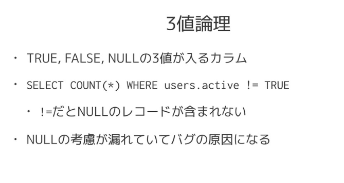
その他twitterの反応
Rails関連(ActiveRecord)
Rails以外